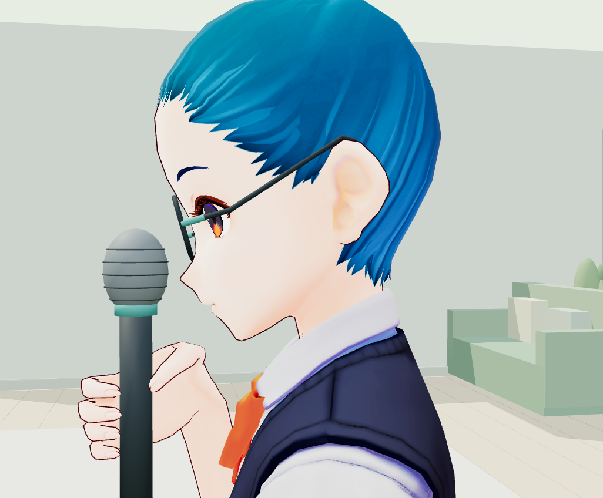
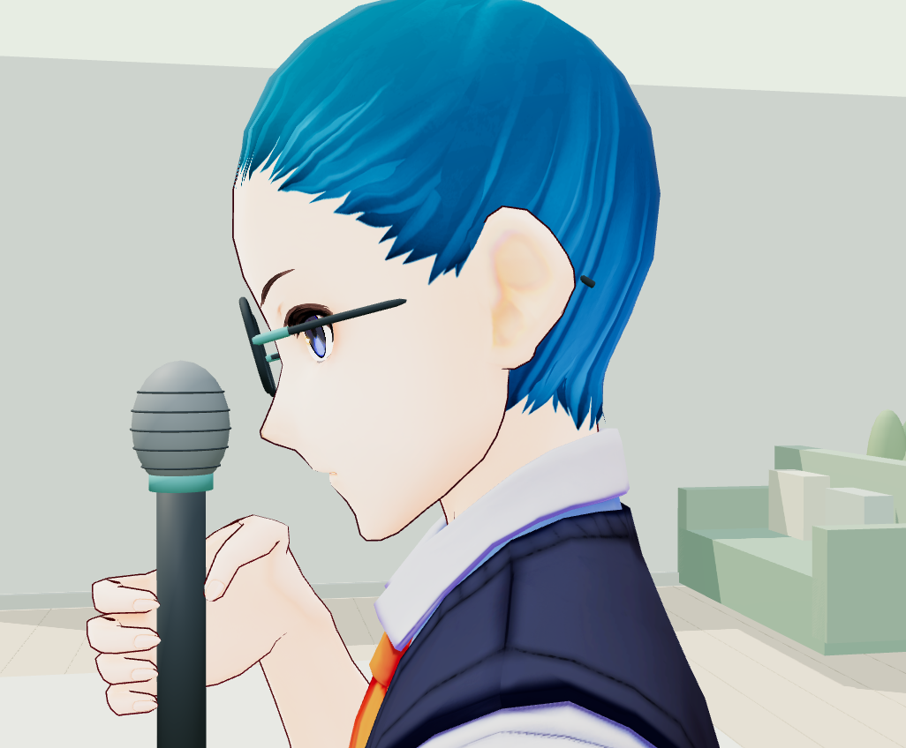

ACC-01 镜腿候选：消除头侧穿入，造型仍待选择
主版本未改变。当前镜腿上绕耳冠，最大改动女37.8mm、男40.9mm，不是微小调整。0静态交叉不等于自然佩戴；耳根沟未精确拟合。近图为静态，房间原片为真实1×完整站坐起讲话持麦。
完整范围、实际时钟和版本差异 · 新b345仅增加无精确配置拒绝，下面形状及影片身份仍为de62。
女性原体 · 静态侧面近图
原269：镜腿进入头侧de62候选：连续但明显上斜，耳根支撑待审
女性原体 · 同版正常房间原片
de62显式legacy原形de62局部适配
男性原体 · 静态侧面近图
原269：镜腿进入头侧
de62候选：连续但明显上斜，耳根支撑待审 男性原体 · 同版正常房间原片
de62显式legacy原形de62局部适配